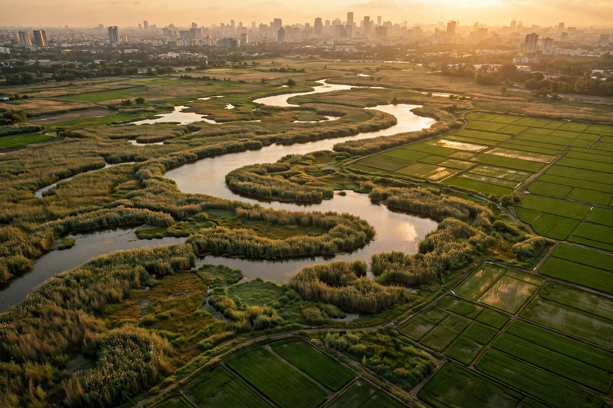
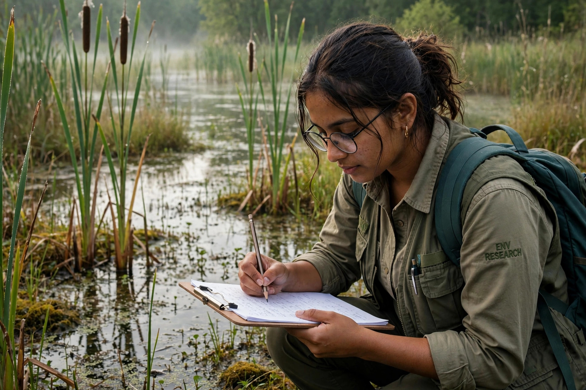

Sustainability & ESG Portfolio
ESG Coordinator | Sustainability Research | ESG Data & Reporting
Toronto, Ontario | Available to start immediately

Environmental Sciences graduate with First-Class Honours and first-author peer-reviewed research in Urban Ecosystems (Springer), bringing experience in environmental analysis, sustainability research, GIS and remote sensing. Currently an ESG Coordinator supporting ESG and sustainability research: organizing source documentation, validating sustainability data, and maintaining reporting trackers and deliverables.
Skilled in Excel, Tableau, Python (Pandas) and SQL for data cleaning, quality checks, KPI and trend analysis, and clear reporting through dashboards and workbooks. Practical exposure to carbon-emissions baselines, CDP data checks, Scope 3 reduction options and Net Zero recommendations through the BCG Climate & Sustainability Job Simulation. Strong research and communication skills, with experience preparing reports and presentations and coordinating work to meet deadlines.
Peer-reviewed research on how urban growth is reshaping the wetlands that protect Colombo from flooding.
Urban Ecosystems | Springer | 2025

Conference Abstract | 2023
Examined how wetland degradation in Colombo District affects the ecosystem services those wetlands provide, including flood control and water purification.
Conference Abstract | 2022
Tracked two decades of land use change (2000-2020) in and around the Thalangama wetland using remote sensing and GIS, and surveyed 50 local residents and 6 national experts on ecosystem services, analyzed with Principal Component Analysis in SPSS. Paddy fields shrank 3.95% and settlements grew 3.72% inside the wetland, while vegetation in the surrounding areas fell 8.14%.
Research Project
Prepared an academic sustainability report after engaging with a textile company and reviewing its previous sustainability reports. Examined reporting practices and indicators using GRI-related concepts, and presented the findings.
Job Simulation | Forage
Calculated a carbon-emissions baseline in Excel and checked data against CDP information. Compared carbon-reduction initiatives, including Scope 3 options, developed Net Zero-aligned recommendations, and prepared a client-facing presentation, including responses to investor concerns.
Data Project | GitHub
Exploratory analysis of Canadian climate data in a Jupyter notebook, cleaning and examining temperature-related records with Python and Pandas.
| Reporting Item | Source | Status | Quality Check |
|---|---|---|---|
| Energy consumption data | Utility records | Validated | Totals cross-checked against invoices; gaps flagged for follow-up |
| Emissions factors | Published factor library | Validated | Factor year and region confirmed against reporting period |
| Policy documentation | Internal policy files | In review | Version and approval date to be confirmed with document owner |
ESG and sustainability research, sustainability data management support, sustainability reporting support, environmental analysis, Sustainable Development Goals (SDGs), carbon-emissions analysis, Scope 3 emissions, Net Zero strategies, CDP data review
KPI analysis and tracking, trend analysis, data cleaning and standardization, data validation, data quality assurance, data integrity checks, dashboard development, data visualization, performance measurement
Microsoft Excel, Tableau, Python (Pandas), SQL, ArcGIS, Google Earth Pro, SPSS, Microsoft PowerPoint and Word, Google Workspace, Salesforce
Research and analytical reports, sustainability documentation, reporting trackers, source documentation, data quality checks, presentation development, record maintenance, stakeholder communication, deliverable tracking
First-Class Honours, GPA 3.77 / 4.30. Undergraduate research on urban wetland change in Colombo District became the first-author Springer publication above.
Graded A+. Also holds the Salesforce Agentforce Specialist certification (2025).
YRES Volunteer Appreciation Award, 2026.
SDG use-case research reports authored for Vosyn Inc., examining how multilingual AI communication can support the Sustainable Development Goals in Sri Lanka. Full reports available as PDFs.
Science Article | Institute of Biology, Sri Lanka (IOBSL) Research Stories
A science communication article translating a 2021 study (Dissanayake, Wickramasinghe & Manage) on harmful diatoms and dinoflagellates along Sri Lanka's southern coast into an accessible research story. Sampling at five sites (Ambalangoda, Hikkaduwa, Dodanduwa, Mirissa and Tangalle) identified 27 diatom and 10 dinoflagellate species, 11 of them potentially harmful, with the highest concentration at Mirissa. The article explains how the harmful species connect to turbidity and phosphorus from human activity, and why long-term coastal water-quality monitoring matters.
Research Report | Vosyn
How multilingual municipal communication strengthens urban resilience: flood alerts, waste instructions, transport updates and participatory planning in Colombo. Addresses SDG targets including 11.2 (sustainable transport) and disaster-risk reduction.
Research Report | Vosyn
How voice-based climate communication in Sinhala, Tamil and English improves warning comprehension, preparedness and adaptation for flood and climate-risk communities. Addresses SDG target 13.1 (resilience to climate hazards).
Research Report | Vosyn
How accessible conservation communication supports wetland restoration, human-wildlife coexistence and protected-area guidance in a global biodiversity hotspot. Addresses SDG targets including 15.1 (ecosystem conservation).
Rasadari Ranasinghe | Toronto, Ontario
Email: rasadariravihari@gmail.com | Phone: (647) 510-9744